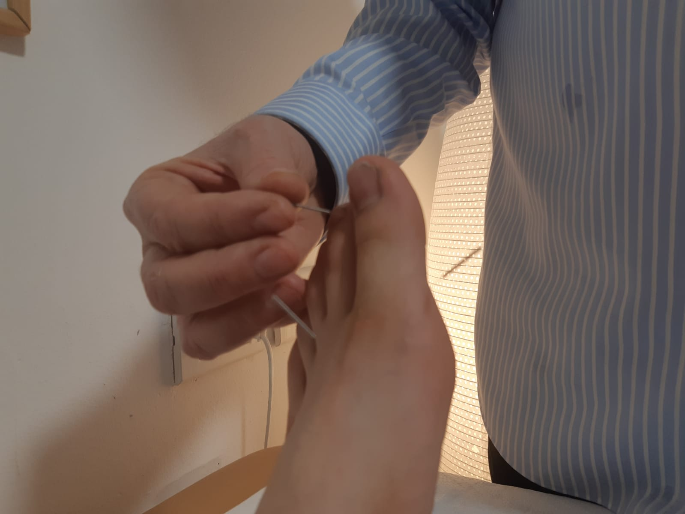
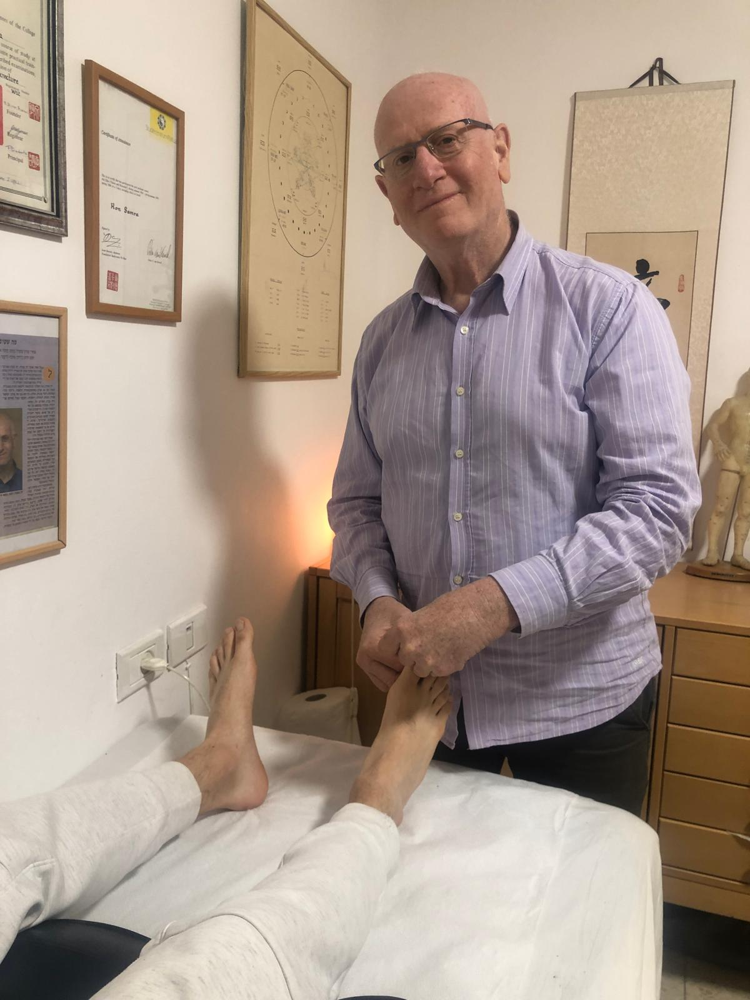
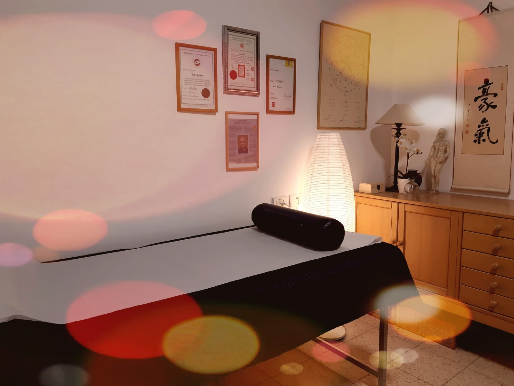

כאב שלא עובר
כאבי גב, צוואר, כתפיים — שמלווים אותך חודשים. גם אחרי פיזיותרפיה, תרופות, ומנוחה.
35+ שנות ניסיון בדיקור סיני. טיפול אישי שמגיע לשורש הבעיה — לא רק מטפל בסימפטום.
הגוף שלך מדבר. לעיתים בשפה שהרפואה הקונבנציונלית לא מבינה. הרפואה הסינית מקשיבה לו.
כאבי גב, צוואר, כתפיים — שמלווים אותך חודשים. גם אחרי פיזיותרפיה, תרופות, ומנוחה.
מתח שלא עוזב, חרדה, תחושת צמצום. הגוף נושא את הלחץ — ורון עוזר לשחרר אותו.
קשה להירדם, מתעוררים בלילה, קמים עייפים. שינה עמוקה ומשקמת היא לא מותרות.
עייפות שלא עוברת גם אחרי שינה. אנרגיה נמוכה שמשפיעה על כל תחום בחיים.
הבדיקות יצאו תקינות, אך אתה מרגיש שמשהו לא בסדר. הרפואה הסינית רואה את מה שהרגילה מפספסת.
מחזור לא סדיר, תסמיני מנופאוזה, תמיכה בתהליך פוריות — גישה טבעית ועדינה.
מוכר לך? שלח הודעה קצרה — נשמח לשמוע ולראות יחד איך אפשר לעזור.
💬 דברו איתי בוואטסאפדיקור סיני מסורתי רואה את הגוף כמערכת שלמה — פיזית, רגשית ואנרגטית. מחפשים את השורש, לא מכסים את הסימפטום.
לפני הטיפול — שיחה אמיתית. מה הגוף מרגיש, מה החיים אומרים. לא רק רשימת סימפטומים.
הדיקור מפעיל נקודות שמשפיעות על מערכות הגוף כולו — לא פלסטר על פצע.
סטרס ורגשות מתבטאים בגוף. הטיפול מאזן גם את הממד הרגשי, לא רק הפיזי.
רוב המטופלים מדווחים על שיפור כבר לאחר 2–3 טיפולים. שינוי עמוק ומתמשך.
לא 35 שנה על הנייר — אלא אלפי שיחות אמיתיות עם אנשים שסבלו ורצו לחיות אחרת.
גדלתי בצל הרפואה: אבי היה רופא בכיר בתל השומר. רציתי ללכת בעקבותיו — אבל מצאתי את עצמי בלונדון, בקולג' הבינלאומי לרפואה סינית. זה שינה הכל.
לאחר 4 שנות לימוד נשארתי שם עוד 3 שנים כמנחה קליני. חזרתי לישראל עם ידע, שפה וגישה שונה לחלוטין לגוף האדם.
היום אני מטפל בקליניקה שלי במודיעין, מרצה באוניברסיטה העברית, ועובד גם עם קופת חולים כללית משלימה.
"הגישה שלי פשוטה — להקשיב באמת. לא רק לסימפטומים, אלא לחיים שמאחוריהם."
— רון סמרה
הקליניקה במודיעין מציעה מרחב טיפולי שקט, אישי ונעים — כדי שתרגישו בטוחים כבר מהרגע הראשון.




רוצה לדעת אם הטיפול מתאים לך? שאל — ללא התחייבות, ללא לחץ.
💬 לשאלות ותיאום"הגעתי במצב קשה של פציאליס ובמצב נפשי ירוד. הצלחת, אחרי חודש ימים בלבד, להביאני למצב בריא. הטיפול הוריד לי מפעם לפעם את רף החרדה. אתה כישרון אמיתי."
"סבלתי שנים מאסטמה וקוצר נשימה. תוך כמה מפגשים חשתי בהבדל. רון לימד אותי לנשום נכון ועזר לי לשנות הרגלי אכילה. מאז השתמשתי פעמים ספורות בלבד במשאף."
"סבלתי מכאבי בטן חריפים בשל בקע סרעפתי. לאחר שטיפולים תרופתיים לא הועילו, פניתי לרון. לאחר מספר טיפולים חשתי הקלה ניכרת. אני נמצאת היום במצב טוב בהרבה."
הודעה קצרה בוואטסאפ — רון מחזיר תוך שעה. ללא טפסים, ללא המתנה.
60–75 דקות של הקשבה אמיתית, אבחון מעמיק, ותוכנית טיפול אישית כבר בפגישה הראשונה.
טיפולים קבועים, מותאמים לגוף שלך. כל טיפול בנוי סביבך — לא סביב פרוטוקול.
רוב המטופלים מדווחים על שיפור אחרי 2–3 טיפולים. שינוי שמחזיק לאורך זמן.
המחטים דקות מאוד — רובן כמעט ולא מרגישים. חלק מהמטופלים חשים עקצוץ קל או חום נעים. רוב האנשים מגלים שהטיפול מרגיע ואף גורם לנמנום.
תלוי בבעיה. לבעיות חדשות — לרוב 3–5 טיפולים. לבעיות כרוניות — 6–10 טיפולים. בטיפול הראשון נבנה יחד תוכנית ברורה ומותאמת אישית.
רוב המטופלים מדווחים על שיפור כבר לאחר 1–3 טיפולים. לבעיות ותיקות — השיפור הדרגתי אך עמוק ויציב יותר.
בהחלט. רפואה סינית משלימה — לא מחליפה — את הטיפול הקונבנציונלי. חשוב ליידע את הרופא המטפל שלך.
אבחון מעמיק לפי הרפואה הסינית, תשאול מקיף, בניית תוכנית טיפול אישית, וטיפול ראשון בפועל. 60–75 דקות. ₪525.
המחויבות לתהליך היא שמביאה לתוצאה האמיתית
שלח הודעה בוואטסאפ — רון מחזיר תוך שעה. ללא התחייבות, ללא לחץ, ללא שאלונים.
💬 שלח הודעה עכשיו⚠️ הטיפולים אינם מהווים תחליף לייעוץ רפואי. יש להיוועץ ברופא בכל מצב רפואי. ביטול — עד 24 שעות מראש.
רון סמרה מחזיק בתעודת מטפל מוסמך ברפואה סינית BAc. Lic. Ac ואינו רופא MD. המידע באתר אינו מיועד לשמש כהמלצה רפואית. תוצאות הטיפול משתנות מאדם לאדם ודורשות עקביות.